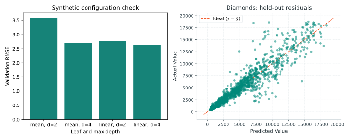

Decision tree regression in Python: estimate diamond prices¶
Predict the listed price of a diamond from its measurements and grading labels. Compare a simple baseline and two tree configurations. Inspect the largest errors before using the score for a pricing decision.
1. Get the data and make the split¶
Save the OpenML diamonds dataset 46923 to datasets/diamonds.parquet. It contains 53,940 records. Use 6,000 rows to fit and 2,000 independent rows to evaluate. A production pricing study needs a split that respects listing date, seller and repeated items where available.
The input includes numeric measurements such as carat and raw labels for cut, color and clarity. Keep those labels as strings. Select the target and feature order once.
2. Fit and compare¶
from statistics import mean
import pandas as pd
from mltreelib import Metrics, ModelTree
df = pd.read_parquet("datasets/diamonds.parquet").sample(frac=1, random_state=2026)
features = df.columns.drop("price").tolist()
types = ["categorical" if c in {"cut", "color", "clarity"} else "numeric"
for c in features]
train, test = df.iloc[:6000], df.iloc[6000:8000]
def rows(frame):
return [[None if pd.isna(v) else v for v in row]
for row in frame[features].itertuples(index=False, name=None)]
x_train, x_test = rows(train), rows(test)
y_train, y_test = train["price"].tolist(), test["price"].tolist()
metrics = Metrics()
print("baseline", metrics.regression(y_test, [mean(y_train)] * len(test))["rmse"])
for leaf in ("mean", "linear"):
tree = ModelTree(leaf=leaf, max_depth=2, min_rows=40, prune="none")
tree.fit(x_train, y_train, col_names=features, dtypes=types)
predictions = tree.predict(x_test)
print(leaf, metrics.regression(y_test, predictions)["rmse"])
print(tree.splits()[:1], tree.leaves()[0])
Run the complete study to regenerate the chart.

3. Interpret the errors¶
| Prediction | Test RMSE |
|---|---|
| Global training mean | 3,998 |
| Mean leaves | 1,712 |
| Linear leaves | 1,367 |
Both trees include a split on carat at 0.87. The linear leaves reduced test RMSE by about 20% compared with the mean leaves in this run. The first leaf had 3,582 training records.
The left panel summarizes error with RMSE. The right panel shows prediction minus observed price. Look for systematic underpricing below the zero line and overpricing above it. Add MAE if you need the average absolute error in price units. Review residuals by cut, price band and support. A shallow linear tree can follow a trend inside a leaf. Check for extrapolation and sudden changes at split boundaries before relying on that trend.
Use splits() to review named feature conditions and leaves() to inspect support and coefficients. Category conditions can display internal codes. Keep that mapping available before showing a rule to a reviewer.
4. Repeat the comparison with missing inputs¶
The regression comparison first generates 5,000 records with raw category labels and 15% missing numeric inputs. It fits four ModelTree configurations on 3,000 rows, selects one using 1,000 validation rows, then checks it on 1,000 separate test rows. The test set contains 169 missing numeric values. No imputation or categorical encoder is applied.
| Synthetic configuration | Validation RMSE |
|---|---|
| Mean leaves, depth 2 | 3.594 |
| Mean leaves, depth 4 | 2.704 |
| Linear leaves, depth 2 | 2.770 |
| Linear leaves, depth 4 | 2.633 |
For this seed and simulated data, linear leaves at depth 4 had the lowest validation RMSE. Its test RMSE was 2.933, against 6.385 for a training-mean baseline. This chooses among four settings on one synthetic problem. It does not establish the best model for other datasets.

The same configuration then fits 6,000 rows from the real OpenML diamonds dataset 46923 and predicts 2,000 separate rows. The data has 53,940 total records. Download its parquet file to datasets/diamonds.parquet; see the dataset manifest. The example needs pandas, pyarrow and matplotlib.
On the fixed random split, test RMSE was 1,225.052 versus 3,982.039 for the training-mean baseline. Test MAE was 641.615 versus 3,012.514. These values use the dataset's price units and describe this split, not a benchmark result. The selected real training columns contained no missing values, so the synthetic check supplies the missing-data exercise.
The real tree splits on named size measurements, including x and y, and exposes leaf support and coefficients. Inspect the feature definitions and leaf sample sizes before drawing business conclusions. Category values in fitted structures can appear as internal codes. Coefficients and paths describe the prediction model; they do not establish what happens if a business changes a feature.
For more on local slopes and the fair comparison setup, see the model tree regression reference.